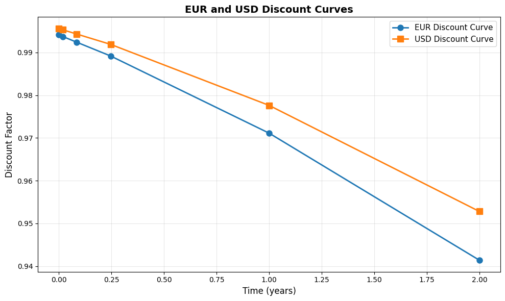
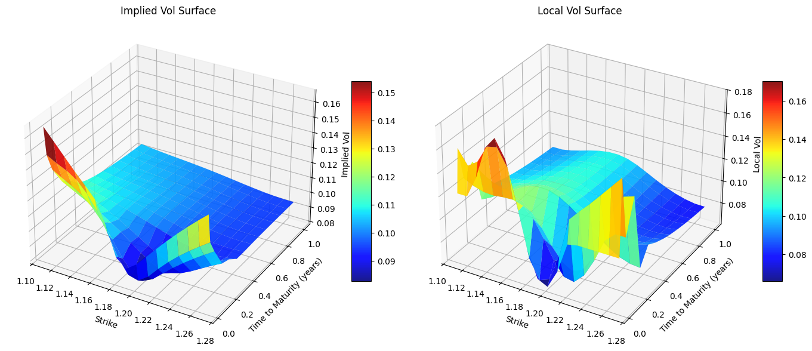
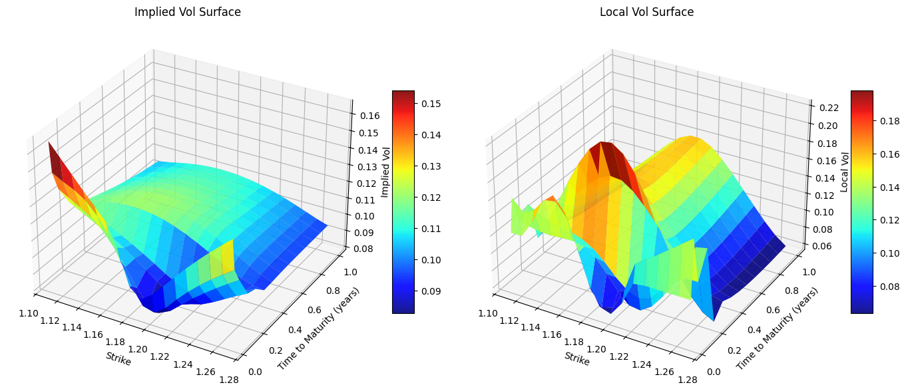
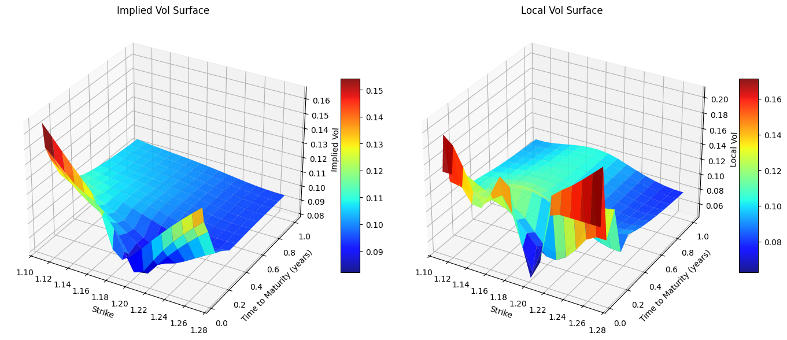
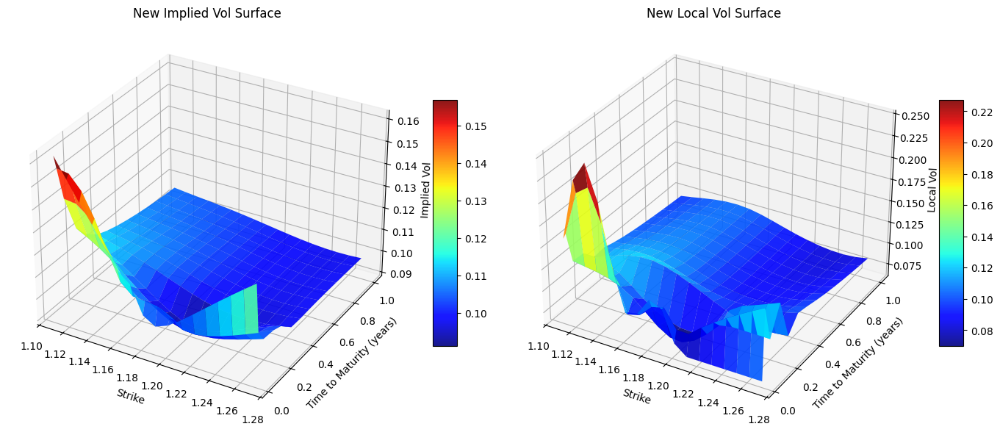

EUR_USD = 1.18
today = ql.Date(12, ql.December, 2025)
ref_date = today
calendar = ql.NullCalendar()
dc = ql.Actual365Fixed()
r_d = 0.0325
r_f = 0.02
ql.Settings.instance().evaluationDate = todayIn this notebook, we continue on the track to study the track of hedging in the world of FX option still from a trader sitting in a exotic desk in a investment bank. As we’ve seen in the previous notebooks (Hedging a book of exotics options) we have cover the basics on how to hedge a book of FX exotics, both in the case where we are hedging under the Black-Scholes model and in the case where we have a volatility smile and hedge options with the same expiration using the VV method (Hedging a book of exotics options using the Vanna-Volga), in this notebook we are going to take a even further step since we are going to leverage the whole IV surface to hedge our portfolio made of different options with different strikes and expirations. In this case, I’ve decided to leverage the local volatility model and price using the Finite Difference method. The assets that we are considering are thus under the following dynamics:
\[ \begin{align*} dS_t &= (r_d - r_f) S_t \, dt + \sigma(S, t) S_t \, dW_t^d, \\ dB^d_t &= r_d B^d_t\, dt, \\ dB^f_t &= r_f B^f_t\, dt \end{align*} \]
Market Data
Let’s assume that we are an USD based desk and we are dealing with EURUSD exotics. The initial market data at time \(t = 0\) is the following
\[ \begin{align*} S_0 &= 1.18 \\ Date(Today) &= 12/12/2025 \\ r_{USD} &= 0.03 \\ r_{EUR} &= 0.02 \\ \end{align*} \]
With the following Implied Vol surface
| \(10\Delta p\) | \(25\Delta p\) | ATM | \(25\Delta c\) | \(10\Delta c\) | |
|---|---|---|---|---|---|
| 1W | 13.50% | 12.00% | 9.50% | 8.50% | 9.50% |
| 1M | 13.00% | 11.50% | 9.00% | 8.00% | 9.00% |
| 3M | 12.50% | 11.00% | 9.50% | 8.50% | 9.50% |
| 1Y | 12.00% | 10.50% | 10.00% | 9.50% | 10.50% |
For the sake of simplicity we consider that the interest rate term structures for the USD and EUR are both flat
Note in the FX option world, IVs are quoted as a delta-vol pairs for each maturity.
spot_quote = ql.SimpleQuote(EUR_USD)
spot_handle = ql.QuoteHandle(spot_quote)
deltas = [-0.10, -0.25, 0.5, 0.25, 0.10]
option_types = [ql.Option.Put, ql.Option.Put, ql.Option.Call, ql.Option.Call, ql.Option.Call]
maturity_1y = calendar.advance(today, ql.Period(1, ql.Years))
maturity_3m = calendar.advance(today, ql.Period(3, ql.Months))
maturity_6m = calendar.advance(today, ql.Period(6, ql.Months))
maturity_1m = calendar.advance(today, ql.Period(1, ql.Months))
maturity_1w = calendar.advance(today, ql.Period(1, ql.Weeks))
maturities = [
maturity_1w,
maturity_1m,
maturity_3m,
maturity_1y
]
times = [dc.yearFraction(today, m) for m in maturities]
# Vol surface
ivs = np.array([
# 0.10P, 0.25P, ATM, 0.25C, 0.10C
[0.135, 0.12, 0.095, 0.090, 0.095], # 1W
[0.130, 0.115, 0.090, 0.080, 0.090], # 1M
[0.125, 0.110, 0.095, 0.085, 0.095], # 3M
[0.120, 0.105, 0.100, 0.095, 0.105], # 1Y
])# Rates TS
domestic_ts = ql.YieldTermStructureHandle(ql.FlatForward(today, r_d, dc))
foreign_ts = ql.YieldTermStructureHandle(ql.FlatForward(today, r_f, dc))# Discount curves
eur_dates = [ql.Date(27, ql.August, 2025), ql.Date(27, ql.August, 2026), ql.Date(27, ql.August, 2027)]
eur_dfs = [1.0, 0.98, 0.95]
eur_curve = ql.DiscountCurve(eur_dates, eur_dfs, dc)
eur_curve.enableExtrapolation()
eur_disc_ts = ql.YieldTermStructureHandle(eur_curve)
usd_dates = [ql.Date(27, ql.August, 2025), ql.Date(27, ql.August, 2026), ql.Date(27, ql.August, 2027)]
usd_dfs = [1.0, 0.985, 0.96]
usd_curve = ql.DiscountCurve(usd_dates, usd_dfs, dc)
usd_curve.enableExtrapolation()
usd_disc_ts = ql.YieldTermStructureHandle(usd_curve)Let’s also suppose that the following discount curve:

Since we have a sticky delta volatility surface, we need to turn the surface into a sticky strike volatility surface in order to make QuantLib make use of those IVs when pricing the exotics. To do that let’s use the create_strike_iv_surf helper function defined above. create_strike_iv_surf uses the ql.BlackDeltaCalculator class which allows us to get the strike from the delta-vol quote according the specific delta quote convetion that we are using.
strikes = create_strike_iv_surf(EUR_USD, usd_curve, eur_curve, deltas, option_types, times, ivs)The corresponding strikes for each \((\Delta,T)\) tuple are:
| 10D P | 25D P | ATM | 25D C | 10D C | |
|---|---|---|---|---|---|
| 1W | 1.152382 | 1.167127 | 1.180212 | 1.190167 | 1.200282 |
| 1M | 1.125401 | 1.154811 | 1.180866 | 1.199518 | 1.221262 |
| 3M | 1.093388 | 1.140628 | 1.182536 | 1.216533 | 1.256383 |
| 1Y | 1.025369 | 1.112431 | 1.189692 | 1.268784 | 1.363115 |
Since, now we have a set of IV with different strikes for each expiration, we need to find a way to build the IV surface using this data. One efficient and common way to do that is using the Andersen-Huge interpolation (see Andreasen and Huge 2010) method, which allows us to achieve this goal. In a nuthsell, the Andreasen and Huge have introduced an efficient and arbitrage free volatility interpolation method based on a one step finite difference implicit Euler scheme applied to a local volatility parametrization. Probably the most notable use case is the generation of a local volatility surface from a set of option quotes.
QuantLib provides us with a series of classes that can help us to build both the IV and the local surface from the IV data, using the Andersen-Huge method. First and foremost, we need to build a calibration set, which is basically a list of Tuple made by the option and the iv relative to that option (option, ivs_quote), and then we can create an instance of the ql.AndersenHugeVolatilityInterpl with the calibration set created, that is the class that is going to handle the interpolation. Then we need to create the relative Implied vol and Local vol adapter the ql.AndersenHugeVolatilityAdapter and the ql.AndersenHugeLocalAdapter respectively. Those are the instances that resprents the BlackVarianceTermStructure and the LocalVolTermStructure that we need to further wrap into a RelinkableHandle.
Why a RenilableHandle you might ask? Well it’s because it will come in handyh to us when calculating the sensitivities, rembember a RelinkableHandle can be link to another term structure after it is first created, unlike a plain handle.
# Calibration of vol surfaces
def calibrate_vol_surface(strikes: Union[List[List[float]], np.ndarray],
options: List[ql.Option],
maturities: List[float],
ivs: np.array
) -> Tuple[ql.BlackVolTermStructure, ql.LocalVolTermStructure]:
"""
Calibrate the given ivs quotes and build a BlackVolTermStructure and a LocalVolTermStructure
Parameters:
strikes (Union[List[List[float]], np.ndarray]): the strikes of the volatility surface
options (List[ql.Option]): the types of option a specific strike is referring to
maturities (List[float]): list of maturieties of the vol surface
ivs (np.ndarray): the iv surface data
Return:
ql.Tuple[ql.BlackVolTermStructure, ql.LocalVolTermStructure]: tuple contaning the calibrate black vol term structure
and the local vol term structure
"""
calibration_set = ql.CalibrationSet()
n, m = len(maturities), len(options)
for i in range(n):
for j in range(m):
payoff = ql.PlainVanillaPayoff(options[i], strikes[i][j])
maturity = ql.EuropeanExercise(maturities[i])
calibration_set.push_back((ql.VanillaOption(payoff, maturity), ql.SimpleQuote(ivs[i][j])))
ah_interpolation = ql.AndreasenHugeVolatilityInterpl(calibration_set, \
spot_handle, domestic_ts, foreign_ts)
ah_vol_surf = ql.AndreasenHugeVolatilityAdapter(ah_interpolation) # IV surface
ah_local_vol = ql.AndreasenHugeLocalVolAdapter(ah_interpolation) # LV surface
return ah_vol_surf, ah_local_vol
ah_vol_surf, ah_local_vol = calibrate_vol_surface(strikes, option_types, maturities, ivs)
black_vol_surf_handle = ql.RelinkableBlackVolTermStructureHandle(ah_vol_surf)
local_vol_surf_handle = ql.RelinkableLocalVolTermStructureHandle(ah_local_vol)Now that we have constructed the vol surfaces, let’s now visualized how they look:

Just a reminder \(IV_{\text{surface}} \ne LV_{\text{surface}}\), they are related but they are not the same thing. IVs represent a sort of estimate of the average future volatility of the underlying during the option’s lifetime. In a way, IVs is a “global” measure of volatility, in contrast to the local volatility \(\sigma_{LV}\) at any spot price and time.
Since we are using the local vol model, one way to price option is by using the Finite Difference method. QuantLib provides us with the FdBlackScholesBarrierEngine class to achieve that, keep in mind that we need to set useLocalVol=True, thus we can use the local volatility function when running the pricing engine.
engine = ql.FdBlackScholesBarrierEngine(
process,
200,
400,
0,
ql.FdmSchemeDesc.Douglas(),
True, # localVol has to be True
0.1)Exotics Book
Here’s how the trader book is composed of:
1st Barrier
\[ \begin{align*} \text{Option type} &= \text{Call} \\ \text{Notional} &= \$1000000 \\ T &= 1.0 \\ \text{Barrier} &= 1.30 \\ \text{Strike} &= 25\Delta c \\ \text{Barrier Type} &= \text{Up and Out} \end{align*} \]
# Barrier 1
notional = 1_000_000
barrier = 1.30
barrier_type = ql.Barrier.UpOut
exercise = ql.EuropeanExercise(maturity_1y)
strike = strike_from_delta(
EUR_USD,
0.25,
times[-1],
ql.Option.Call,
ivs[-1, -2],
usd_curve,
eur_curve
)
barrier_25d_130b = call_barrier_factory.get_option(strike, exercise, barrier, barrier_type)
barrier_1 = BarrierPosition(barrier_25d_130b, notional, NullInstrument())2nd Barrier
\[ \begin{align*} \text{Option type} &= \text{Call} \\ \text{Notional} &= \$2000000 \\ T &= 0.5 \\ \text{Barrier} &= 1.08 \\ \text{Strike} &= 25\Delta c \\ \text{Barrier Type} &= \text{Down and Out} \end{align*} \]
# Barrier 2
notional = 2_000_000
barrier = 1.08
barrier_type = ql.Barrier.DownOut
exercise = ql.EuropeanExercise(maturity_6m)
strike = strike_from_delta(
EUR_USD,
0.25,
dc.yearFraction(today, maturity_6m),
ql.Option.Call,
0.09, # Interpolated value
usd_curve,
eur_curve
)
barrier_25d_108b = call_barrier_factory.get_option(strike, exercise, barrier, barrier_type)
barrier_2 = BarrierPosition(barrier_25d_108b, notional, NullInstrument())3rd Barrier
\[ \begin{align*} \text{Option type} &= \text{Call} \\ \text{Notional} &= \$1000000 \\ T &= 0.25 \\ \text{Barrier} &= 1.20 \\ \text{Strike} &= 25\Delta c \\ \text{Barrier Type} &= \text{Up and In} \end{align*} \]
# Barrier 3
notional = 1_000_000
barrier = 1.20
barrier_type = ql.Barrier.UpIn
exercise = ql.EuropeanExercise(maturity_3m)
strike = strike_from_delta(
EUR_USD,
0.25,
dc.yearFraction(today, maturity_3m),
ql.Option.Call,
ivs[-2, -2],
usd_curve,
eur_curve
)
call_vanilla_factory = FxVanillaOptionFactory(spot_handle, maturity_1y, ql.Option.Call)
barrier_25d_120b = call_barrier_factory.get_option(strike, exercise, barrier, barrier_type)
backup_vanilla = call_vanilla_factory.get_option(strike)
FxVanillaOptionFactory.assign_analyitcal_price_engine(backup_vanilla, process_25c)
barrier_3 = BarrierPosition(barrier_25d_120b, notional, backup_vanilla)4th Barrier
\[ \begin{align*} \text{Option type} &= \text{Put} \\ \text{Notional} &= \$1000000 \\ T &= 0.25 \\ \text{Barrier} &= 1.05 \\ \text{Strike} &= 25\Delta p \\ \text{Barrier Type} &= \text{Down and Out} \end{align*} \]
# Barrier 4
notional = 1_000_000
barrier = 1.05
barrier_type = ql.Barrier.DownOut
exercise = ql.EuropeanExercise(maturity_3m)
strike = strike_from_delta(
EUR_USD,
-0.25,
dc.yearFraction(today, maturity_3m),
ql.Option.Put,
ivs[-2, 2],
usd_curve,
eur_curve
)
barrier_25d_105b = put_barrier_factory.get_option(strike, exercise, barrier, barrier_type)
barrier_4 = BarrierPosition(barrier_25d_105b, notional, NullInstrument())5th Barrier
\[ \begin{align*} \text{Option type} &= \text{Put} \\ \text{Notional} &= \$1000000 \\ \text{Barrier} &= 1.25 \\ T &= 0.0833 \\ \text{Strike} &= 25\Delta p \\ \text{Barrier Type} &= \text{Up and Out} \end{align*} \]
# Barrier 5
notional = 2_000_000
barrier = 1.25
barrier_type = ql.Barrier.UpOut
exercise = ql.EuropeanExercise(maturity_1m)
strike = strike_from_delta(
EUR_USD,
-0.25,
dc.yearFraction(today, maturity_1m),
ql.Option.Put,
ivs[1, 2],
usd_curve,
eur_curve
)
barrier_25d_105b = put_barrier_factory.get_option(strike, exercise, barrier, barrier_type)
barrier_5 = BarrierPosition(barrier_25d_105b, notional, NullInstrument())book: List[BarrierPosition] = [barrier_1, barrier_2, barrier_3, barrier_4, barrier_5]
for ins in book:
FxBarrierOptionFactory.assign_price_engine(ins.instrument, engine)Now we have setup our book, let’s see what’s the premium on those options.
Barrier 1, price $260.39
Barrier 2, price $26721.44
Barrier 3, price $7822.55
Barrier 4, price $4510.61
Barrier 5, price $13603.77The total book value is ${book_value}Bucketed sensitivities
When dealing with vol surfaces or smiles, to calculate the sensitivity w.r.t. the volatility does not result trival as when we are dealing with a single vol like in BS model. As shown in the Hedging a book of exotic options with VV method, in case we have a smile we can calculate the sensitivities to the various movements of the volatility smile (paralallel shift, varying the skew, and the curvature), and those ideas can be also applied to the whole vol surface.
Another possible way, to get those vega sensitivities is to calculate how the prices are sensible to each single IV variation, in this way we get the so called bucket sensitivites.
For example we want to know how the price of an exotic is sensible to the variation to the \(\sigma_{(0.10\Delta P, 1M)}\). To the get that we can use the forward finte difference formula:
\[ \frac{\partial V}{\partial \sigma_{(0.10\Delta P, 1M)}} = \frac{V(\sigma_{(0.10\Delta P, 1M)} + \varepsilon, \cdot) - V(\sigma_{(0.10\Delta P, 1M)}, \cdot)}{\varepsilon} \]
By repeating this process for all vols of the IV surface we get a matrix of the bucket sensitivities:
\[ \text{Bucket Sensitivities} = \left[ \begin{array}{c|cccc} & \text{10$\Delta$ P} & \text{25$\Delta$ P} & \text{ATM} & \text{25$\Delta$ C} & \text{10$\Delta$ C} \\ \hline \text{1W} & s_{11} & s_{12} & s_{13} & s_{14} & s_{15} \\ \text{1M} & s_{21} & s_{22} & s_{23} & s_{24} & s_{25} \\ \text{3M} & s_{31} & s_{32} & s_{33} & s_{34} & s_{35} \\ \text{1Y} & s_{41} & s_{42} & s_{43} & s_{44} & s_{45} \\ \end{array} \right] \]
The methodology to use to calculate the sensitivities w.r.t. the volatility surface is up the trader/trading desk, on how they want those sensitivities …
TODO: add risk surface explanation
To visualized the effect of those single bumps of the single IVs, let’s for example bump by \(1\%\) the ATM vol with maturity 1 year, and visualized how the IV and LV surfaces are changing.

The IV surface does change a bit, but where we can see a big changment is in LV surface where a new hump appears at the end of the surface. Let’s now see how the prices of the exotics have changed with this new vol surfaces.
new_premiums = [opt.NPV() for opt in book]
new_premiums[555.7614339685688,
31789.433532155144,
7822.54562563613,
4510.6110117102935,
13603.771705059622]np.array(premiums) - np.array(new_premiums)array([ -295.3701985 , -5067.99548249, 0. , 0. ,
0. ])As we can see the only options where the price has varied is the 1st barrier, which is the only barrier that has expiration time 1Y. … You might wonder what does bump another vol with shorted maturity, will that affect also the exotics with maturities greater than that maturity? Let’s bump for example by 1bp the ATM, 1M implied vol and see the effects on the other exotics prices.

Barrier 1, ATM 1M IV bump sensitivity: $ -0.10
Barrier 2, ATM 1M IV bump sensitivity: $ 17.19
Barrier 3, ATM 1M IV bump sensitivity: $ 4.48
Barrier 4, ATM 1M IV bump sensitivity: $ -22.66
Barrier 5, ATM 1M IV bump sensitivity: $ -565.39Now we see how all options in the book have been impacted by this vol bump, that’s because all the options in the book have an expiration after 1Y, thus this will impact their price. Of course Barrier 5 will be the one with more price impact, since it expires in 1 month, but we can see that also in options expirying in 3 months and 6 months there is a price impact.
Let’s apply the process above for all the IVs in the original IV surface and calculate those bucket sensitivities.
bucket_sens = np.zeros_like(ivs)
delta_vol = 1.0e-08
for i in range(len(ivs)):
for j in range(len(ivs[0])):
ivs[i, j] += delta_vol
tmp_strikes = create_strike_iv_surf(EUR_USD, usd_curve, eur_curve, deltas, option_types, times, ivs)
new_ah_vol_surf, new_ah_local_vol = calibrate_vol_surface(tmp_strikes, option_types, maturities, ivs)
black_vol_surf_handle.linkTo(new_ah_vol_surf)
local_vol_surf_handle.linkTo(new_ah_local_vol)
new_book_value = sum([opt.NPV() for opt in book])
bucket_sens[i, j] = (new_book_value - book_value) / delta_vol
ivs[i, j] -= delta_vol| 10D P | 25D P | ATM | 25D C | 10D C | |
|---|---|---|---|---|---|
| 1W | -1878.530020 | 5996.552500 | -7096.302579 | 3011.398803 | 974.274008 |
| 1M | -11133.617227 | 168080.302683 | 41107.244760 | -11645.406630 | 1430.459088 |
| 3M | -153599.417536 | 173253.199318 | 40819.460264 | 250610.804505 | 49760.293768 |
| 1Y | 15323.454136 | -176753.786945 | 341937.783378 | 346704.848926 | -71231.295442 |
How do we hedge those bucketed sensitivities? Well, we can do it with plain vanilla options, …
\[ s_{ij} = w_{ij} \frac{\partial C_{BS}(\sigma{ij})}{\partial \sigma_{ij}} \Rightarrow w_{ij} = \frac{s_{ij}}{\frac{\partial C_{BS}(\sigma{ij})}{\partial \sigma_{ij}}} \]
vanilla_options = np.zeros_like(bucket_sens).tolist()
for i in range(len(vanilla_options)):
for j in range(len(vanilla_options[0])):
maturity = maturities[i]
option_type = option_types[j]
strike = strikes[i, j]
process = ql.GarmanKohlagenProcess(
spot_handle,
foreign_ts,
domestic_ts,
ql.BlackVolTermStructureHandle(
ql.BlackConstantVol(ref_date, calendar, ivs[i, j], dc)
)
)
payoff = ql.PlainVanillaPayoff(option_type, strike)
vanilla_options[i][j] = ql.VanillaOption(payoff, ql.EuropeanExercise(maturity))
vanilla_options[i][j].setPricingEngine(ql.AnalyticEuropeanEngine(process))vegas = np.array([[opt.vega() * notional for opt in row] for row in vanilla_options])vega_weights = bucket_sens / vegas
with np.printoptions(precision=3):
print(vega_weights)[[-0.033 0.058 -0.054 0.029 0.017]
[-0.094 0.78 0.15 -0.052 0.012]
[-0.778 0.477 0.088 0.656 0.231]
[ 0.04 -0.251 0.372 0.446 -0.159]]Now that we have found the weight for all the vanillas, let’s now reduce the total \(\Delta\) exposure of our portfolio. The weight for the spot position hedge is given by
\[ w_{\Delta} = \frac{\frac{\partial \text{book}}{\partial S}}{\sum_{ij} \frac{\partial C_{BS}^{ij}}{\partial S}} \]
spot_change = 0.01 * spot_quote.value() / 2
delta_book = sum([pos.sensitivity(delta, h=spot_change) for pos in book])
delta_vanillas = sum([sum([opt.delta() * v_w * notional for opt, v_w in zip(row, v_row)]) for row, v_row in zip(vanilla_options, vega_weights)])hedging_delta_weight = delta_book / delta_vanillas
hedging_delta_weightnp.float64(-0.23937887076554554)vanillas_premiums = [[opt.NPV() * v_w * notional for opt, v_w in zip(row, v_row)] for row, v_row in zip(vanilla_options, vega_weights)]
spot_hedge_usd = hedging_delta_weight * notional * spot_handle.value()
hedging_str_premium = np.sum(vanillas_premiums) + spot_hedge_usd
bank_account_value = - hedging_str_premium + np.sum(premiums)port_value = [hedging_str_premium - np.sum(premiums) + bank_account_value]
print(f"The portfolio value at time t = 0 is {port_value[0]}")The portfolio value at time t = 0 is 0.0Changes of the hedging portfolio with the changes of the market conditions
Now that we have setup our hedging portfolio see verify how its will change as the spot and vol surface change. Let’s assume that in a 2-day period the spot went go down by 200 pips, the ATM vol went up by \(0.5\%\) while the the 25 \(\Delta\) Put vol went up \(0.8\%\) (since the price to hedge from downside has went up because of the underlying so there is more demand for puts).
\[ \begin{align*} S_0 &= 1.16 \\ Date(Today) &= 16/12/2025 \\ r_d &= 0.03 \\ r_f &= 0.02 \\ \end{align*} \]
With the following Implied Vol surface
| \(10\Delta p\) | \(25\Delta p\) | ATM | \(25\Delta c\) | \(10\Delta c\) | |
|---|---|---|---|---|---|
| 3D | 14.00% | 13.00% | 12.00% | 11.50% | 10.50% |
| 1M | 14.00% | 13.50% | 10.00% | 9.00% | 9.75% |
| 3M | 12.75% | 11.50% | 10.00% | 9.00% | 9.50% |
| 1Y | 12.50% | 10.75% | 10.25% | 9.75% | 9.50% |
We are now interested to see what’s the new exposure of our hedging portfolio.
ref_date = today + ql.Period(2, ql.Days)
spot_quote.setValue(1.16)
new_times = [dc.yearFraction(ref_date, m) for m in maturities]
# Vol surface
new_ivs = np.array([
# 0.10P, 0.25P, ATM, 0.25C, 0.10C
[0.140, 0.13, 0.12, 0.115, 0.105], # 1W
[0.140, 0.135, 0.110, 0.105, 0.10], # 1M
[0.1275, 0.115, 0.100, 0.090, 0.095], # 3M
[0.125, 0.1075, 0.1025, 0.0975, 0.105], # 1Y
])
# Move vols and expiry time
ql.Settings.instance().evaluationDate = ref_dateLet’s calculate the new strikes needed to build the new calibrated local vol surface.
new_strikes = create_strike_iv_surf(spot_quote.value(), usd_curve, eur_curve, deltas, option_types, new_times, new_ivs)array([[1.13612881, 1.14837208, 1.16019107, 1.17076404, 1.17858337],
[1.10412947, 1.13192316, 1.16097287, 1.18435339, 1.20361041],
[1.07412444, 1.11998689, 1.16256386, 1.19758045, 1.23419363],
[1.00256954, 1.09219685, 1.16972097, 1.24936665, 1.33944933]])ah_vol_surf, ah_local_vol = calibrate_vol_surface(new_strikes, option_types, maturities, new_ivs)
black_vol_surf_handle.linkTo(ah_vol_surf)
local_vol_surf_handle.linkTo(ah_local_vol)
We now have to recalculate the price of the hedging vanillas and the value of the new exotics to calculate the \(P\&L\) from time \(t\) to time \(t+1\)
for i in range(len(vanilla_options)):
for j in range(len(vanilla_options[0])):
process = ql.GarmanKohlagenProcess(
spot_handle,
foreign_ts,
domestic_ts,
ql.BlackVolTermStructureHandle(
ql.BlackConstantVol(ref_date, calendar, new_ivs[i, j], dc)
)
)
vanilla_options[i][j].setPricingEngine(ql.AnalyticEuropeanEngine(process))new_premiums = [opt.NPV() for opt in book]
new_book_value = sum(new_premiums)
new_vanilla_premiums = [[opt.NPV() * v_w * notional for opt, v_w in zip(row, v_row)] for row, v_row in zip(vanilla_options, vega_weights)]
spot_premium_eur = hedging_delta_weight * notional
new_spot_hedge_usd = hedging_delta_weight * notional * spot_handle.value()
new_hedging_str_premium = np.sum(new_vanilla_premiums) + new_spot_hedge_usddt = dc.yearFraction(today, ref_date)
usd_interest_cost = hedging_str_premium * r_d * dt
eur_interest_accr = spot_premium_eur * r_f * dtnew_total_portfolio_value = new_hedging_str_premium - np.sum(new_premiums) + bank_account_value - usd_interest_cost + eur_interest_accr * spot_quote.value()
print(f"Portfolio value at time t = 1 is: ${new_total_portfolio_value}")Portfolio value at time t = 1 is: $202.86605298389892Thus the variation from time 0 to time 1 is just about \(\$200\), this confirms that our hedge worked by limiting the variation of the whole portfolio value.
References
Andreasen, Jesper, and Brian Huge. 2010. “Volatility Interpolation.” Risk Magazine, March. https://doi.org/10.2139/ssrn.1694972.